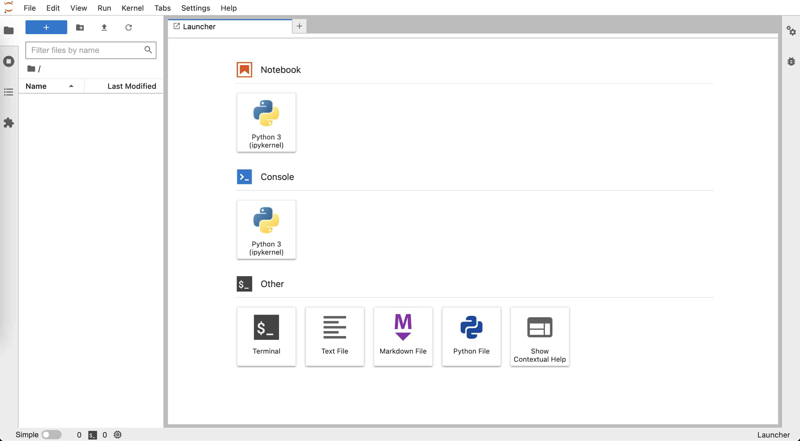
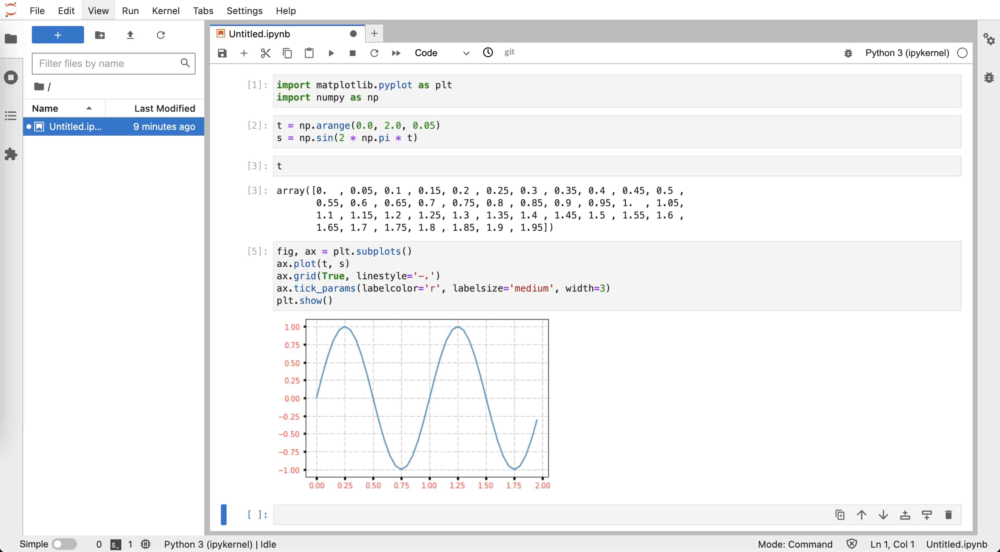

Python 语言
Contents
Python 语言#
简介#
Python 是一种广泛使用的通用编程语言，其具有语法简单、 功能强大等优点，是目前地震学科研最常用的编程语言之一。
这一节中，我们不介绍具体的 Python 语法，而是着重介绍如何安装和管理 Python、 如何编写并执行 Python 脚本等。这一节的最后列出了一些免费的 Python 学习资源， 读者可根据需要自行学习。
安装 Miniconda#
Python 是一种解释型语言，需要专门的解释器去执行 Python 代码。
尽管 Linux/macOS 系统内置了 Python 解释器，但是建议用户不要使用它，
以免误操作破坏系统内置 Python， 造成系统出现问题。
建议用户安装 Miniconda， 使用其提供的 conda 命令管理和安装 Python 及其模块。
Python、Anaconda 和 Miniconda 的区别与联系
在安装和使用 Miniconda 前，读者有必要了解 Python、Anaconda 和 Miniconda 三者 之间的区别与联系：
- Python 解释器
从 Python 官方网站 下载的 Python 安装包 只提供了一个 Python 解释器，仅包含 Python 的核心模块和库，是运行 Python 脚本所必需的。使用官方的 Python 安装包相当于安装了 Python 解释器 + 核心模块/库。
- Anaconda
Anaconda 是一个 Python 发行版，不仅提供了 Python 解释器，还内置了很多 Python 开发工具与众多科学计算相关的库，形成了 一个可以开箱即用的 Python 科学计算环境，省去了自行配置科学计算环境的麻烦。 Anaconda 还提供了强大的软件包管理工具
conda，可以方便地安装模块和管理环境。 安装 Anaconda 相当于安装了 Python 解释器 + 核心模块/库 + 数百个科学计算相关模块 + 包管理器conda。尽管 Anaconda 有很多优点，其也有明显的缺点：
安装包非常大（超过 500 MB）
安装过程耗时长（一般超过 5 分钟）
安装后占用大量硬盘空间（一般超过 3 GB）
安装了很多平时用不到的模块，进而导致安装新模块时会可能出现版本冲突
- Miniconda
Miniconda 是 Anaconda 的精简版。 它继承了 Anaconda 的优点，同时避免了 Anaconda 的臃肿。其安装包只有约 50 MB，安装 通常也只需要数十秒。安装 Miniconda 相当于安装了 Python 解释器 + 核心模块/库 + 包管理器
conda。
下面展示了如何在 Linux 系统下安装 Miniconda。其它操作系统下的安装说明以及具体使用方法可以参考 地震“学”软件中 Anaconda 相关内容。
下载 Miniconda
安装 Miniconda
$ bash Miniconda3-latest-Linux-x86_64.sh
Miniconda 默认会安装到
$HOME/miniconda3下，在安装过程中可以 设置为其他路径。安装通常只需要十几秒，在安装的最后会出现：
Do you wish the installer to initialize Miniconda3 by running conda init? [yes|no] [no] >>>
输入
yes则安装包会向当前 SHELL 的配置文件写入conda初始化语句。测试安装
打开一个新的终端，在终端中输入
python，输出中看到 Anaconda, Inc. 字样即代表成功安装 Miniconda 并启动了 Python 解释器：$ python Python 3.9.12 (main, Apr 5 2022, 01:53:17) [GCC 7.5.0] :: Anaconda, Inc. on linux Type "help", "copyright", "credits" or "license" for more information. >>>
在提示符
>>>后输入quit()后按下 Enter 键退出 Python 解释器。
初识 Python#
打开终端，输入 python 就会进入 Python 解释器的交互模式：
$ python
Python 3.9.12 (main, Apr 5 2022, 01:53:17)
[GCC 7.5.0] :: Anaconda, Inc. on linux
Type "help", "copyright", "credits" or "license" for more information.
>>>
进入 Python 解释器后，首先会显示 Python 版本信息、版权声明以及帮助信息，
然后会显示符号 >>>。>>> 是 Python 解释器在交互模式下的主提示符，提示用户
可以在 >>> 后输入 Python 指令。
在 >>> 提示符后输入 1 + 2 并按下 Enter 键将指令 1 + 2 传给 Python
解释器。解释器接收指令后会执行指令，输出结果 3，并再次显示主提示符
>>> 等待用户的下一次输入。
>>> 1 + 2
3
>>>
Tip
Python 解释器交互模式可以当做一个快捷的计算器来使用！
下面继续看一个稍复杂点的例子。给变量 x 赋值，然后紧跟着一个判断语句
“如果 x 的值大于 0，则打印字符串 Hello world!”。
>>> x = 5
>>> if x > 0:
... print("Hello world!")
...
Hello world!
>>>
这个判断语句无法在一行写完，因而需要写成多行语句。
在主提示符后输入 if x > 0: 并按下 Enter 键，会显示符号 ...。
... 是 Python 解释器在交互模式下的次提示符，用于表明多行语句还没写完，需要继续输入。
在次提示符 ... 后不输入指令而直接键入 Enter，表示该代码块已结束。
Python 解释器会对输入的多行语句进行解释，并输出字符串“Hello world!”。
Note
C 语言使用大括号 { } 划分代码块，而 Python 中使用缩进划分代码块！
因而上面的例子中 print 前需要用空格缩进（通常是 4 个空格）。
在主提示符 >>> 后输入 quit() 或者按下 Ctrl + D 键
即可退出 Python 解释器的交互模式。
>>> quit()
Python 脚本#
虽然在 Python 解释器的交互模式下可以执行 Python 代码，但写长代码非常不方便， 其代码编辑功能很弱，也不具备代码补全功能。更重要的是，退出交互模式后， 之前写的 Python 代码不会保存，下次想要执行相同代码时只能重写。 因而，通常都不会在 Python 解释器的交互模式下写代码，而是将 Python 代码写到 Python 脚本中。
Python 脚本其实就是一个包含了一系列 Python 指令的文本文件，后缀通常是 .py，
在终端中可以通过 python xxxx.py 的方式执行 Python 脚本（xxxx.py 是 Python
脚本的文件名）。
下面以一个简单的 Python 脚本作为示例。启动文本编辑器，新建一个文件，将以下 Python 代码写到文件中：
x = 5
if x > 0:
print("Hello world!")
将文件保存为后缀 .py 的文件（比如 first-script.py），即得到了
一个可执行的 Python 脚本。打开终端，切换到 Python 脚本所在的目录，执行如下命令来运行脚本：
$ python first-script.py
Hello world!
安装 Python 包#
Python 语言的一大特色是其功能强大的标准库和第三方软件包（也称模块或库）。 Python 解释器内置了所有标准库，安装解释器后就可以直接使用标准库， 而第三方包需要先安装才能使用。
pip、conda 与 mamba
学习如何安装 Python 包之前，有必要先了解 pip、conda 和 mamba，以及它们之间的
区别与联系:
pippip是 Python 官方提供的包管理器，可以安装 Python 包索引网站 上的 Python 包，也可用于从源码安装 Python 包。condaconda是 Anaconda/Miniconda 提供的包管理器，不仅可以安装 Python 包， 还可以安装其他语言写的包（理论上可以安装任何软件）。它的另一个重要功能是管理 Python 环境， 可用于在一个系统内安装多个不同版本的 Python 解释器或包。conda功能强大，但其最大的缺点就是慢。安装软件包前解析软件包之间的版本 依赖关系很慢，下载和安装也很慢。mambamamba是conda的替代品，不仅解析软件的版本依赖关系非常快（其核心代码是用 C 语言编写的）， 还可以并行下载、安装软件包，大大减少了安装软件的时间。mamba的用法与conda几乎完全一致，网络上看到的conda命令，将conda替换为mamba即可直接执行。
推荐使用包管理器 mamba 安装和管理 Python 包。
mamba 使用的是 conda 的配置文件，因而使用 mamba 前，需先对 conda 做简单配置：
# 增加 conda-forge 通道，可以安装更多的软件包
$ conda config --add channels conda-forge
# 显示通道的 URL
$ conda config --set show_channel_urls true
# 配置使用国内清华源以加快软件下载速度
$ conda config --add default_channels https://mirrors.tuna.tsinghua.edu.cn/anaconda/pkgs/main
$ conda config --set 'custom_channels.conda-forge' https://mirrors.tuna.tsinghua.edu.cn/anaconda/cloud
使用 conda 安装 mamba：
$ conda install 'mamba>=0.16'
安装 mamba 后，执行如下命令即可在 bash 中使用 mamba 的所有功能：
$ mamba init bash
至此，就可以完全使用 mamba 管理和安装 Python 包和环境了。
使用 mamba 安装软件很简单，直接 mamba install 加上要安装的软件包名称即可。
mamba 可安装的软件包位于 Anaconda 网站。
读者可以执行如下命令，安装本节余下内容会用到的几个 Python 包：
$ mamba install numpy matplotlib jupyterlab
对于 Anaconda 网站 没有的包，则只能使用 pip 安装。
Jupyter Notebook#
前面介绍了如何在 Python 解释器交互模式执行 Python 代码，也介绍了如何将 Python 代码写成脚本并执行。这两种方式各有优缺点：交互模式下编写代码不方便， 但是可以一句一句执行代码，随时检查某个语句的输出或某个变量的值。 编写 Python 脚本可以在编辑器中完成，因而写代码更加高效，但执行 Python 脚本时 只能从头到尾执行，每次修改代码后都需要重新执行脚本里的所有代码，因而调试起来很费时。
JupyterLab 是一个基于网页的交互式开发环境，
已经成为当前最流行的 Python 开发环境。它将两种方式的优点结合起来，
可以高效地编辑代码、单步执行代码、随时查看变量值、支持丰富的可视化输出。
JupyterLab 对应的文件称之为 Notebook，其文件后缀是 .ipynb。
下面将通过实例展示如何使用 JupyterLab。
打开终端，键入命令 jupyter-lab，启动 JupyterLab。
$ jupyter-lab
JupyterLab 会在浏览器中打开一个标签页，显示启动界面。如下图所示， 启动界面有若干图标，可以用于创建 Notebook、纯文本文件、Markdown 文件 或 Python 文件，还可以在浏览器中打开一个终端。 
点击“Notebook”下的图标创建一个空白的 Notebook，文件名默认为 Untitled.ipynb。
如下图所示，左侧为文件浏览器，右侧为新建的 Notebook，光标所在的矩形区域称之为单元格（cell），
可以用于输入 Python 代码。在单元格中输入代码，
按下 Shift + Enter 执行单元格中的代码。

下面的两行代码会导入 NumPy 和 Matplotlib 包。将这两行代码复制到 Notebook 的 单元格中，按下 Shift + Enter 执行：
import matplotlib.pyplot as plt
import numpy as np
下面的代码设置 t 取值为 0 到 2.0，间隔为 0.05，
然后利用函数 \(s = \sin(2 \pi t)\) 生成了一系列点。
将这两行代码复制到 Notebook 的单元格中，按下
Shift + Enter 执行：
t = np.arange(0.0, 2.0, 0.05)
s = np.sin(2 * np.pi * t)
想要看看变量 t 的值？很简单，在单元格中输入变量 t，按下 Shift + Enter，
Notebook 会直接显示该变量的值。如下图所示，可以看出，变量 t 是一个数组，其
最小值是 0，间隔是 0.05，最大值是 1.95（不包括 2.0）：

下面的代码将以变量 t 作为自变量（X 轴）、以变量 s 作为因变量（Y轴）绘制该函数。
将代码复制到单元格中，按下 Shift + Enter 执行：
fig, ax = plt.subplots()
ax.plot(t, s)
plt.show()
执行效果如下图所示，绘图结果直接在 Notebook 里显示，非常直观。

对画出来的图片效果不太满意，想要进一步微调图片的显示效果？下面的两行代码会 给图片加上网格线，并设置刻度颜色、大小、宽度。
ax.grid(True, linestyle='-.')
ax.tick_params(labelcolor='r', labelsize='medium', width=3)
将上面两行代码复制到前一单元格中的 plt.show() 语句之前，按下 Shift + Enter 执行，
效果如下图所示：

可以看到，修改后的代码被执行，并显示了修改后的图片。在执行修改后的代码时，
变量 t 和 s 依然有效，不需要重新执行之前单元格中的代码。
实际上，只要 Kernel 没有重启，Notebook 中的变量就不会被销毁，因而可以很方便地
多次修改并调试某个单元格的代码。
Tip
在 Notebook 中写代码时，可以随时用快捷键 Ctrl + S （Linux 或 Windows）
或 Command + S （macOS）保存 Notebook。所有代码、输出以及图片都会被保存在
.ipynb 文件中。
Tip
Notebook 在交互式开发代码时很方便。但通常我们会想要将代码保存为 Python 脚本， 更加方便执行。在 JupyterLab 中点击菜单“File”→“Save and export Notebook as”→ “Executable Script” 即可将 Notebook 转换为 Python 脚本。
JupyterLab 除了可以编辑 Notebook 外，还可以编辑 Markdown 文件，也可以打开终端 执行命令，还支持多个功能强大的插件。更多的功能，留待读者自行探索。
其他 Python IDE/开发环境#
除了上面介绍的 JupyterLab 外，还有其他方便、实用的 Python IDE/开发环境， 例如：
有兴趣的读者可以尝试不同的 Python IDE/开发环境并根据自己的喜好选择。
Python 学习资源#
下面列出一些 Python 以及常用科学计算模块的相关学习资源：